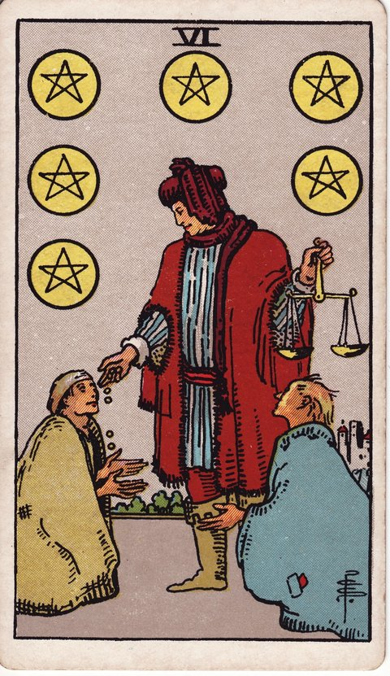

펜타클 · 타로 카드 백과사전
펜타클 6

정방향
키워드: 균형 잡힌 나눔 · 베풂과 되돌림 · 공정한 주고받음 · 잔잔한 순환 · 포개지는 정 · 고마움의 물결
조언: 베푸는 마음을 유지하되 상대도 함께 마음을 쓰고 있는지 살펴보세요.
연애운
솔로
호감 가는 사람에게 부담 없이 마음을 표현하고 자연스럽게 화답받는 시기입니다. 너무 재지 말고 자연스러운 타이밍에 솔직한 마음을 전해보세요.
커플
이번엔 내가, 다음엔 상대가 챙기며 균형 있게 마음을 주고받는 시기입니다. 이 균형이 유지되는 이유를 당연하게만 여기지 말고 가끔은 표현으로 확인해보세요.
재물운
소비
형편이 어려운 지인을 돕거나 기부를 하며 나눔을 실천하는 시기입니다. 도움을 주기 전에 자신의 형편도 무리하지 않는 선인지 함께 살펴보세요.
투자
여러 사람과 자금을 모아 수익을 공정하게 나누는 방식으로 운용하는 시기입니다. 배분 기준을 처음부터 문서로 명확히 남겨두면 나중에 잡음이 없습니다.
취업운
구직
선배나 멘토가 아낌없이 조언과 인맥을 나눠주는 시기입니다. 받은 도움을 발판 삼아 결과로 보답하려는 태도를 보이면 관계가 더 오래갑니다.
이직
새 회사와 조건을 협상하며 서로 만족할 만한 균형점을 찾는 시기입니다. 원하는 조건의 우선순위를 미리 정해두면 협상이 한결 수월해집니다.
직장운
팀워크
업무량과 성과를 공정하게 나누며 팀 분위기가 좋아지는 시기입니다. 이 분위기를 오래 유지하려면 정기적으로 업무 분배를 다시 점검해야 합니다.
개인성과
동료들과 오가는 도움 속에서 자연스럽게 좋은 관계를 만들어가는 시기입니다. 받은 도움을 기억해두었다가 다음에 자신이 먼저 나서서 갚아보세요.
사업운
창업준비
투자자나 초기 고객에게 공정한 조건을 제시하며 신뢰를 쌓는 시기입니다. 눈앞의 이익보다 장기적인 신뢰를 우선하면 더 큰 기회로 이어질 수 있습니다.
운영중
직원과 고객 모두에게 합리적으로 대하며 사업이 건강하게 굴러가는 시기입니다. 이런 균형이 지금처럼 계속 유지되도록 정기적으로 처우를 점검해보세요.
학업운
시험준비
서로 아는 것을 가르쳐주고 배우며 스터디 그룹이 골고루 성장하는 시기입니다. 가르치는 역할을 돌아가며 맡으면 한쪽에만 부담이 쏠리지 않습니다.
진로고민
그동안 선배들에게 받은 도움을 이제 후배에게 되갚아주는 시기입니다. 받았던 것을 그대로 돌려주기보다 지금 후배에게 맞는 방식으로 전해보세요.
건강운
신체
운동 메이트와 서로 격려하며 꾸준히 함께 관리해가는 시기입니다. 서로의 목표가 다를 수 있다는 걸 인정하면 더 오래 함께할 수 있습니다.
정신
고민을 들어주고 또 들어주며 서로에게 힘이 되는 시기입니다. 듣는 역할만 계속되지 않도록 자신의 이야기도 가끔 나눠보세요.
대인관계운
새로운 인연
새로 알게 된 사람의 부탁을 흔쾌히 들어주며 좋은 첫인상을 쌓아가는 시기입니다. 호의를 베풀되 자신이 감당할 수 있는 선은 지켜야 관계가 오래갑니다.
기존 관계
받은 만큼 돌려주려는 마음이 관계를 더 단단하게 만드는 시기입니다. 계산적으로 딱 맞추기보다 마음이 담긴 방식으로 돌려주면 더 진심이 전해집니다.
명예운
베푸는 태도가 알려지며 자연스럽게 좋은 평판이 쌓이는 시기입니다. 평판을 의식하기보다 지금처럼 꾸준히 베푸는 태도 자체에 집중해보세요.
이사운
집주인이나 이웃과 조건을 합리적으로 조율하며 순조롭게 진행되는 시기입니다. 구두로 합의한 내용도 가능하면 문서로 남겨두는 게 안전합니다.
자식운
아이에게 필요한 만큼 적절히 베풀며 균형 잡힌 사랑을 주는 시기입니다. 물질적인 것뿐 아니라 관심과 시간의 균형도 함께 신경 써보세요.
역방향
키워드: 불공정한 거래 · 일방적 의존 · 기울어진 관계 · 억눌린 서운함 · 치우친 저울 · 메마른 보답
조언: 한쪽으로 기운 주고받음을 알아챘다면 지금이라도 균형을 다시 맞춰보세요.
연애운
솔로
마음이나 시간을 쏟은 만큼 돌아오지 않아 서운함이 쌓일 수 있는 시기입니다. 서운함을 혼자 삭이기보다 솔직하게 마음을 전해보는 것이 관계에 더 도움이 됩니다.
커플
늘 한쪽만 먼저 다가가고 챙기는 관계가 계속되고 있을 수 있는 시기입니다. 이번엔 상대가 먼저 다가올 때까지 조금 기다려보는 것도 방법입니다.
재물운
소비
선의로 빌려준 돈을 제때 돌려받지 못해 곤란해질 수 있는 시기입니다. 다음부터는 빌려주기 전에 상환 시기를 명확히 정해두는 습관이 필요합니다.
투자
공동 자금에서 한쪽만 이익을 챙기는 불공정한 배분이 드러날 수 있는 시기입니다. 감정적으로 대응하기 전에 배분 기록부터 다시 확인해봐야 합니다.
취업운
구직
도움을 준 사람이 대가성 부탁을 해오며 부담스러워질 수 있는 시기입니다. 부담스러운 부탁은 처음부터 명확히 선을 그어 거절하는 편이 낫습니다.
이직
제시받은 조건이 기대보다 낮아 일방적으로 손해 보는 느낌이 들 수 있는 시기입니다. 감수하고 받아들이기 전에 한 번 더 재협상을 시도해볼 만합니다.
직장운
팀워크
몇몇에게만 업무가 쏠리는데 인정은 다른 사람이 가져가는 일이 생길 수 있는 시기입니다. 자신이 한 일을 정확히 기록해두면 나중에 억울함을 풀 수 있는 근거가 됩니다.
개인성과
애써 도와줬던 일이 당연하게 여겨지며 존중받지 못한다고 느낄 수 있는 시기입니다. 무조건 참기보다 정중하게라도 자신의 기여를 밝히는 것이 필요합니다.
사업운
창업준비
투자 조건이 한쪽에만 유리하게 짜여 있어 손해를 볼 수 있는 시기입니다. 계약서를 다시 꼼꼼히 살펴보고 불리한 조항은 조정을 요구해야 합니다.
운영중
특정 거래처에만 의존하다 협상력을 잃고 끌려다닐 수 있는 시기입니다. 다른 거래처도 함께 알아두면 협상에서 균형을 되찾을 수 있습니다.
학업운
시험준비
질문에 답해주기만 하고 정작 자신의 공부 시간은 챙기지 못할 수 있는 시기입니다. 답해주는 시간을 정해두고 나머지는 자신의 공부에 집중해보세요.
진로고민
조언해준 사람이 자신의 이익을 앞세운 방향으로 이끌 수 있는 시기입니다. 한 사람의 조언에만 의존하지 말고 여러 시각을 함께 들어보세요.
건강운
신체
운동은 늘 혼자만 애쓰고 상대는 흐지부지하며 의욕이 꺾일 수 있는 시기입니다. 상대에게 맞추기보다 자신의 페이스로 계속 이어가는 편이 낫습니다.
정신
듣기만 하는 역할에 지쳐 이제는 자신의 이야기도 하고 싶어지는 시기입니다. 먼저 자신의 고민을 조심스럽게 꺼내보면 상대도 자연스럽게 귀 기울여줍니다.
대인관계운
새로운 인연
새로 만난 사람이 호의를 당연하게 여기며 이용하려 들 수 있는 시기입니다. 이용당하고 있다는 느낌이 든다면 지금이라도 거리를 두는 게 낫습니다.
기존 관계
한 사람에게만 계속 의지가 쏠리며 그 사람이 지쳐갈 수 있는 시기입니다. 기댈 곳을 한 사람으로 좁히지 말고 조금씩 넓혀가는 게 서로에게 좋습니다.
명예운
호의를 이용만 당했다는 사실이 알려지며 오히려 안쓰럽게 비칠 수 있는 시기입니다. 다음부터는 호의를 베풀기 전에 상대를 조금 더 지켜보는 신중함이 필요합니다.
이사운
집주인에게만 유리한 특약이 뒤늦게 눈에 띄어 곤란해질 수 있는 시기입니다. 계약 조항은 서명 전에 전문가에게 한 번 더 확인받는 것이 안전합니다.
자식운
필요한 만큼 챙겨주지 못한다는 미안함과 아이의 서운함이 함께 쌓일 수 있는 시기입니다. 물질로 채우지 못하는 부분은 함께 보내는 시간으로 채워보세요.
같은 슈트: 펜타클 에이스 · 펜타클 2 · 펜타클 3 · 펜타클 4 · 펜타클 5 · 펜타클 6 · 펜타클 7 · 펜타클 8 · 펜타클 9 · 펜타클 10 · 펜타클 시종 · 펜타클 기사 · 펜타클 퀸 · 펜타클 킹
홈에서 직접 카드 뽑아보기 ↗